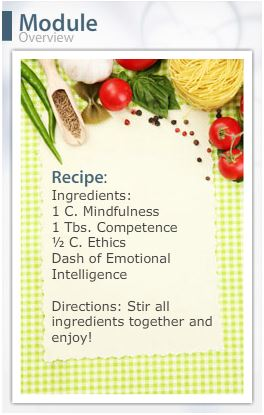

Module 1 Overview


- Define the four primary aspects of interpersonal effectiveness: mindfulness, emotional intelligence, ethics, and competence.
- Apply the model for interpersonal skill improvement and effective goal setting.
- Explain how interpersonal skills are learned.
- Explain how/why ethical behavior is essential to interpersonal effectiveness.
Have you ever tried to make a recipe without the proper ingredients? Although many experienced chefs can improvise and still turn out a masterpiece, most of us would be left with an unsavory and possibly inedible result. When cooking, it is important that you have all of the correct ingredients and a plan for how to combine them.
The same can be said about interpersonal communication. Many key components, or ingredients, are necessary for it to be successful. In this module, we will start looking at the key components that are necessary for a person to be highly interpersonally effective: mindfulness, emotional intelligence, ethics, and competence.
The goal of this course is not simply to learn the components of interpersonal communication; everyone has his or her own style of interpersonal communication, which is sometimes very successful and sometimes not. During the next five modules, you will learn techniques that will help to ensure that your interpersonal communication is effective in your personal, professional, and academic roles, which will help you create the perfect “recipe” for success.